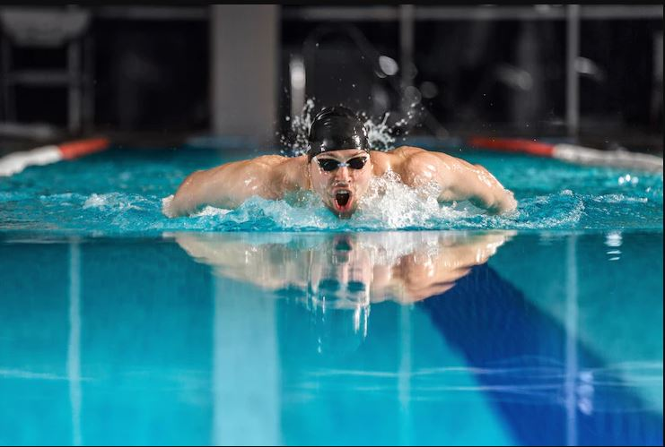

<!--<!DOCTYPE html>
<html>
    <head>
<meta charset="utf-8">
<link rel="stylesheet" href="SSH.css">
    </head>
    <body>
        <div class="logo">
            
        </div>
       <div class="Menu">
           
            <ul>
             
                <li class="ACCUEIL"><a href="https://salleaitelhajtdi2012022.on.drv.tw/MINI%20PROJET%20%20%20%20AIT%20EL%20HAJ%20%20%20%20Abdelhamid%20TDI201/SS.html">ACCUEIL</a></li> 
                <li><a href="#">ACTIVITES</a>
                       <div class="Activite">
                   
                              <ul>
                                  <li><a href="football.html">FOOTBALL</a></li>
                                  <li><a href="Natation.html">NATATION</a></li>
                                  <li><a href="pFitness.html">FITNESS</a></li>
        
                              </ul>
                       </div>
                </li>
              <li><a href="p5.html">ABONNEMENTS</a></li>
                <li><a href="p4.html">CONTACT</a></li>
                <li><a href="p3.html"> Connecter-Vous</a></li>
                <li><a href="p2.html"> Inscrit-Vous</a></li>
                
            </ul>
       </div>

       <br><br>
       <p style="color:blue">On vous l’accorde, le sport, c’est fait pour se dépasser. Et c’est aussi vrai pour la natation.
            Mais, l’idée, ce n’est pas de finir essoufflé au bout de 3 longueurs.
             Ou de s’arrêter sur le bord tous les 200 mètres. <br>
           Avec un peu d’entraînement, et quelques bonnes habitudes, on peut nager longtemps sans s’épuiser.</p><br>
           <strong>1/ ALIMENTEZ-VOUS & HYDRATEZ-VOUS</strong><br>
           <strong>2/ ÉCHAUFFEZ-VOUS & N'OUBLIEZ PAS DE VOUS ÉTIRER</strong><br>
           <strong>3/ AMÉLIOREZ VOTRE POSITION DANS L'EAU & VOTRE HYDRODYNAMISME</strong><br>
           <strong>4/ SOYEZ INFAILLIBLE SUR LA TECHNIQUE</strong><br>
           <strong>5/ PENSEZ À LA COORDINATION DE VOS MOUVEMENTS</strong><br>
           <strong>6/ CONCENTREZ-VOUS SUR VOTRE RESPIRATION</strong><br>
           <strong>7/ NAGEZ AVEC DES ACCESSOIRES</strong><br>
           <strong>8/ NE NÉGLIGEZ PAS LES ÉDUCATIFS</strong><br>
           <strong>9/ ENTRAÎNEZ-VOUS RÉGULIÈREMENT</strong><br>
           <strong>10/ TRAVAILLEZ VOTRE ENDURANCE HORS DE L'EAU</strong>
           
      <br><br>
    </body>
</html>